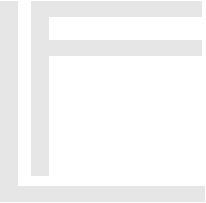

Pierce BCA Protein Assay
The supplied copy is Flex-only. A matching upstream file has not been confirmed.

Lifefabs LabFlowLABFLOW / HYBRID LAB Official documentation ↗WEEK 02 / PROTOCOL VISUALISER
Configure hardware first, then snap together colorful action blocks. Preview requested well targets and inspect the generated Python in 2D or isometric views. Flex is reserved for a later iteration.
Measure the mounted assembly, define pipette targets, and export Opentrons labware JSON.
Define the installed assembly as single-slot, single-channel OT-2 labware. A valid file is not a clearance or calibration check.
Find an example, inspect a copy in LabFlow, or download the source to adapt locally.
The supplied copy is Flex-only. A matching upstream file has not been confirmed.
Repository source uses a parameter helper that may be supplied by the Library download.
Try the repository lookup, or get the published download and open it in Inspect Python.
Selections apply only to static inspection. Python and JSON downloads are unchanged; repository templates may still require the published Library download to run.
Mount pipettes; place labware, tip racks, and compatible modules in deck slots. Move a placed item to reposition it, or drop it in the recycle bin to remove it from this layout.
You can also mount labware directly onto a supported placed module; the generated Python calls module.load_labware(). Confirm physical fit and adapter requirements in the official docs. Add supported plates and tip racks (up to the 11 available slots). These are actual hardware definitions used in generated code, not independent composer settings. Choose a free deck slot or drag a placed card to another slot in the configurator grid.
Mounted pipettes, placed labware/tip racks and modules from this section. The composer generates the action sequence below.
Live planned hardware configuration and requested block targets · not robot telemetry
This panel will identify exactly which generated or inspected plan the viewer currently displays.
The viewer shows current gallery hardware immediately. In Build mode, a mounted supported pipette also updates the protocol automatically. Module load declarations follow the gallery but remain idle; module operations and labware-on-module placements require manual protocol work.
Choose a block from the palette. Every block reads the mounted pipettes and placed labware above. Click a block to edit; drag blocks to reorder.
OT-2 transfer methods: Use the Transfer block for explicit tip and positioning control, or Distribute / Consolidate blocks for cherry-picked multiwell targets. Official verified liquid classes are Flex only, not available on OT-2; this composer does not generate those commands.
Edit the example or download the generated file.
Python → visual viewer: click Analyse code after uploading or pasting a script. The static checker recognises common explicit OT-2 load, pick-up, aspirate, dispense, drop-tip and simple transfer statements. It does not execute Python or the Opentrons API.
Check the current Python, then select between complete, tip-free groups. Hardware setup and code outside run() are copied unchanged. This creates a new run; it does not resume a paused robot.
·
·
Python-to-deck interpretation of supported literal commands. Press Analyse code to show the script’s loaded labware, well targets and event trace. Unsupported commands are flagged; use the official simulator for execution checks.
Generate a protocol or upload a Python file.
Run the current Python file through the Opentrons simulator in an isolated local container.
This service is separate from GitHub Pages. It runs the selected code using Opentrons Python API simulation, not on a physical robot. Because protocol code is executable Python, only use a trusted local container setup; do not expose this endpoint publicly without a hardened, isolated deployment.
simulation-service/, then check the connection.For a well reference such as plate["A1"].bottom(z=1), the visualiser takes the well centre-bottom coordinates in the selected labware definition and adds the well-relative z adjustment. The builder also supports .center() and .top(). It then adds the labware's slot-relative placement in the visualiser's deck frame.
For the three standard operations, Δz is the explicit z argument for bottom(z=...); top() adds the defined well depth. This prototype currently models a limited subset of location expressions.
OT-2 deck coordinates use millimetres, with X to the right, Y toward the back and Z upward. The API resolves labware, pipette/tip geometry and robot calibration to turn a well target into movement. The page can compute well-relative points exactly for bundled definitions, but real deck-space targets still require an exact deck definition and the robot's current calibration/offsets.
This is an educational protocol builder and visualiser, not a robot controller. Inspect the generated Python, validate the labware definitions and pipette/tips on the actual OT-2, run official protocol analysis/simulation for the intended software version, confirm current robot calibration, and dry-run safely before using expensive samples or reagents. Never rely on a browser visualization alone to rule out collisions.